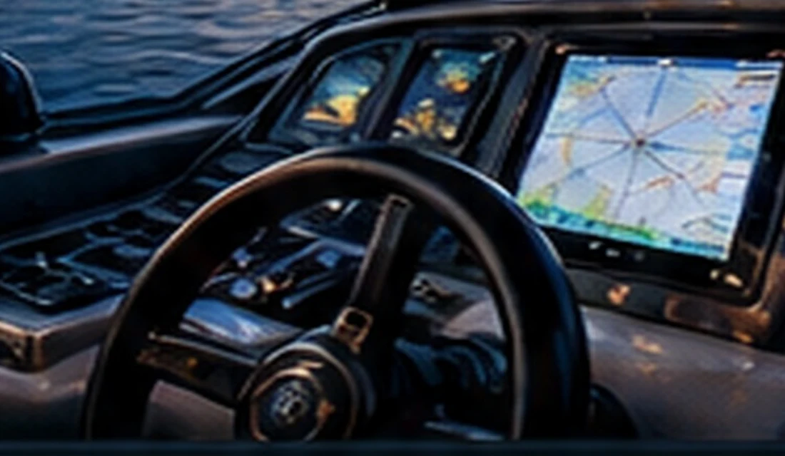

Education & Technical Training
- Electronics Technician
- Industrial Electronics
- Industrial Automation
- Aircraft Maintenance
- Electronics Engineering
- Telecommunications Engineering
ABOUT US / TECHNICAL BACKGROUND
A multidisciplinary technical career focused on understanding, troubleshooting and integrating complex electrical and electronic systems.

A TECHNICAL MINDSET
DAROCHA SYSTEMS draws on nearly 25 years of aviation experience, including work with aircraft electrical and avionics systems. That background informs an approach grounded in observation, technical documentation, measurement and system-level reasoning.
Professional experience also spans electrical and electronic systems, industrial automation, production-line robotics, automated storage technology and embedded systems.
These disciplines come together in the diagnosis, repair and integration of modern marine electrical systems for recreational boats and yachts.
DISCUSS YOUR ELECTRICAL ISSUE →QUALIFICATIONS & EXPERIENCE
Technical studies and professional experience across related disciplines provide a broader view of interconnected systems.
HOW THIS BENEFITS YOUR VESSEL
From intermittent faults to a new onboard system, the goal is to understand how each component interacts with the wider electrical installation.
Observe symptoms, trace circuits and evaluate electrical signals.
Consider power, controls and electronics as connected parts of one system.
Check the results of repairs and adjustments against intended operation.
LET'S TALK ABOUT YOUR VESSEL
Tell us about your electrical problem or installation requirements.